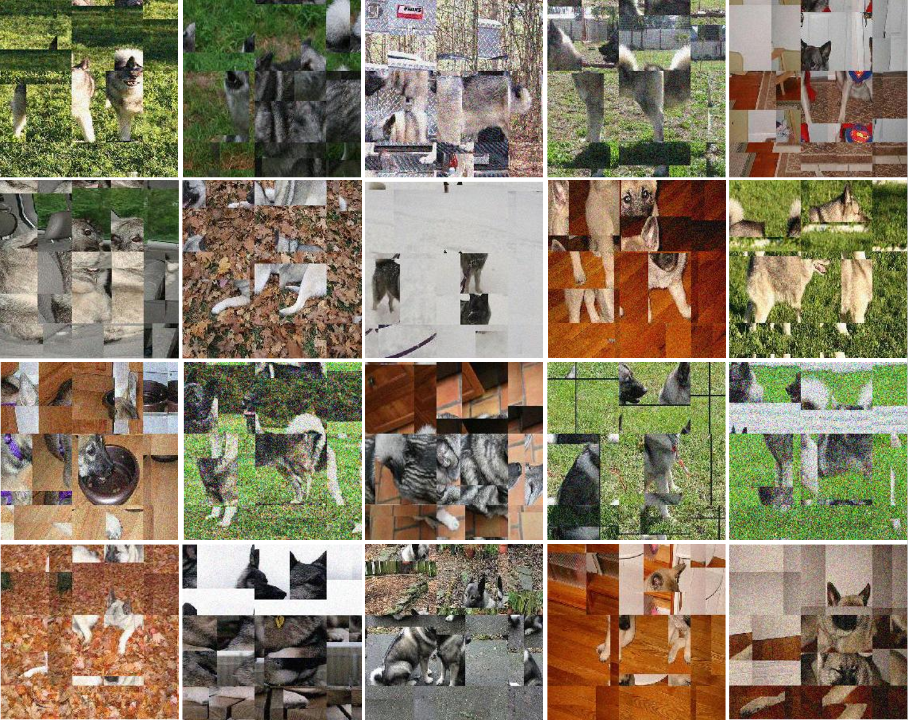

CLIPcats
A digital collage using reinforcement learning to fool CLIP-ViT-B-32.

Digital collage
I used reinforcement learning to create a proximal policy optimization model capable of fooling openAI's CLIP-ViT-B-32 classifier.
The PPO takes an input image of dog, and has the option to shuffle pixels, add noise, or slightly distort the RGB channels. It applies these transformations until the classifier registers the image as a cat.
Over time, the PPO 'learns' how to do this in fewer and fewer steps. In theory, the model will eventually be able to apply a transformation that will fool that classifier but be almost imperceptible to a human.